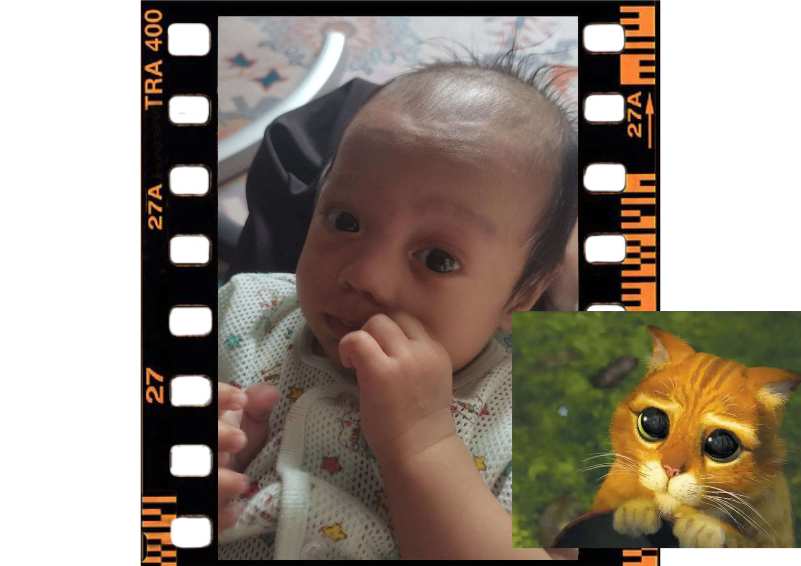

|
After graduation, I failed to further my studies to degree level due to covid which extended my MUET test schedule.
So, I had nothing to do until my cousin sought help to take care of her baby.
Actually, the baby is premature so thats why he should be given very careful attention and care.
Her ibu used to call him "a fighter" but i love to call him "my puss in boot" because he always stare at me like puss in boot.  |
|---|
| Overall, I think I want to appreciate my mother more. Through the sleepless night, I learn to be patient, I learn how important emotional support is to the mother who has just given birth. Not all the lessons we learn are just from books, just this common experience also gave me a lot of lessons. |
|---|
"Every experience, good or bad, is a priceless collector's item" - Isaac Maroon